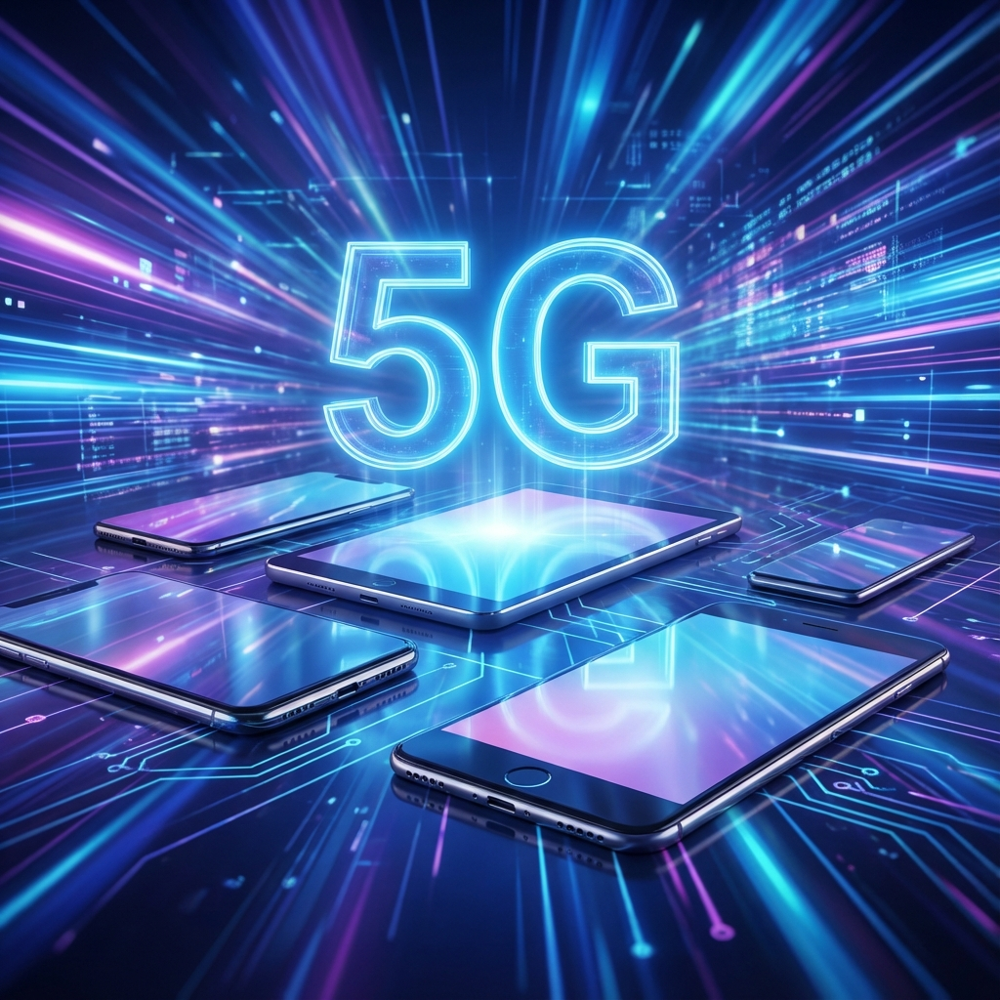

How to Get Free 5G Government Phones and Tablets
In today's digital age, having access to high-speed internet is no longer a luxury—it's a necessity. With the rollout of 5G networks, staying connected has become faster and more reliable than ever. Fortunately, through government assistance programs like Lifeline and the Affordable Connectivity Program (ACP), eligible individuals can now access free 5G government phones and tablets.
Did you know? Qualifying for these programs is easier than you might think. Participation in federal assistance programs such as SNAP, Medicaid, or SSI often makes you automatically eligible.
These devices ensure that low-income households can stay in touch with family, access emergency services, and pursue educational or employment opportunities without the burden of expensive monthly bills. Providers are increasingly offering 5G-capable devices to ensure users can take full advantage of modern network speeds.
Don't miss out on the opportunity to upgrade your connectivity. Securing a free 5G device can maintain your access to essential online resources.